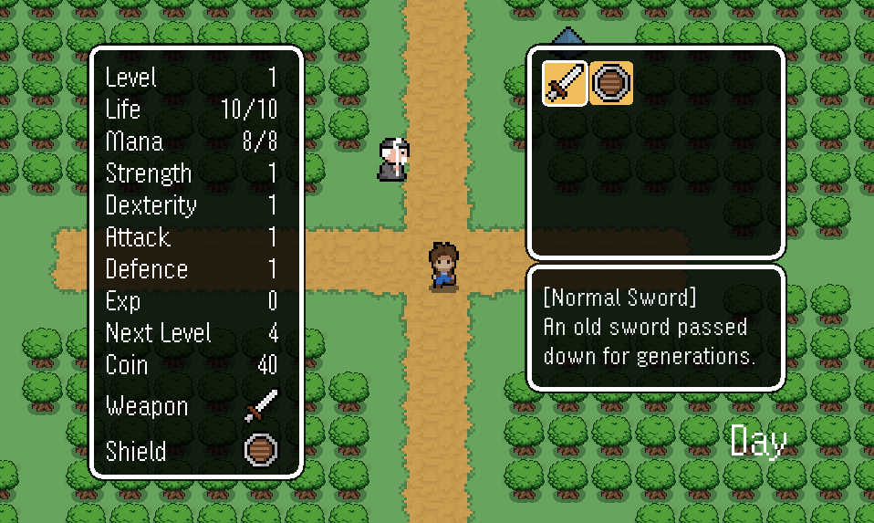
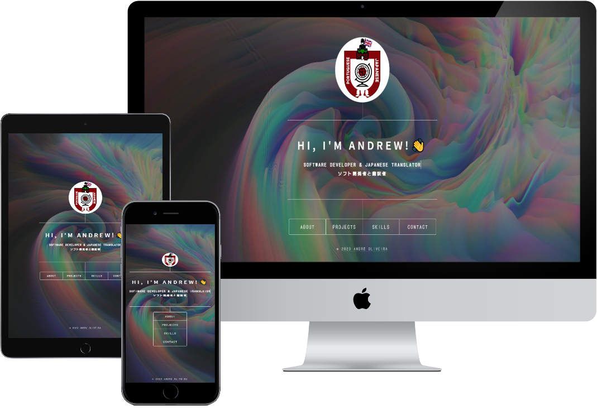

About me
Software Developer with a recently completed Software Development Bootcamp and Japanese translator. In this bootcamp I learned key skills in Object Oriented Programming in Java, software development methodologies, database design and normalization, SQL, and UX and UI design. The immersive training program placed a strong emphasis on Backend Development and has provided me with a solid foundation for building high-quality software solutions.
My passion for software development has been fueled by my interests in playing and creating video games, learning languages, and playing the guitar. In my free time, I find great enjoyment in exploring new programming concepts and experimenting with different software development tools and techniques.
As I have pursued my hobbies and interests, I have discovered the overlap between them and software development. For instance, creating video games has taught me valuable skills such as problem-solving, critical thinking, and attention to detail, which are all critical in the software development field. Similarly, learning new languages has honed my ability to analyze and interpret complex concepts and systems, an important trait for effective software development.
Playing the guitar, on the other hand, has developed my discipline and focus, allowing me to approach complex software development projects with a sense of dedication and perseverance.
Overall, I believe that my diverse hobbies and interests, coupled with my skills, experience, and dedication to my craft, make me a valuable asset to any software development team.
Projects

This is a Java 2D adventure game and also my final bootcamp project. Through this project, I gained proficiency in object-oriented programming principles, troubleshooting and debugging issues, and implementing key gameplay mechanics such as the creation of a game loop, displaying player character, background tiles, and objects, along with implementing simple AI for monsters and hit detection for battles. Additionally, pathfinding and aggressive monsters, collision detection between NPCs and players, and an invincible state after hitting a monster were added. The game includes a battle system, boss fights, NPCs, and a dialogue system.
You can find the repository for this game HERE or by clicking the picture above.

This website's repository. Gained proficiency in SASS, animations and vanilla Javascript.
Skills


I have experience working with a variety of programming languages and software development tools, including Java, JavaScript, React, Node.js, and MySQL. My expertise in these areas has been demonstrated through my development of a Java 2D adventure game, which involved implementing key gameplay mechanics and troubleshooting issues related to game mechanics and user interface.
In addition, I have a strong foundation in web development, having created my portfolio website using HTML, CSS, Sass, and JavaScript. I have also gained proficiency in Bootstrap, CSS Tailwind, and Git through various projects and coursework. I am skilled in database design and normalization, as well as UX and UI design principles, making me a valuable asset for software development projects.
My familiarity with Git, Visual Studio Code, and IntelliJ has allowed me to effectively manage and version control my projects. Additionally, my experience working with Linux and GitHub has enabled me to collaborate effectively with team members and contribute to projects remotely. I am passionate about learning and continuously honing my craft, making me confident in my ability to tackle any software development challenge with dedication and enthusiasm.
Contact me